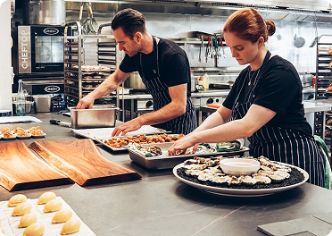
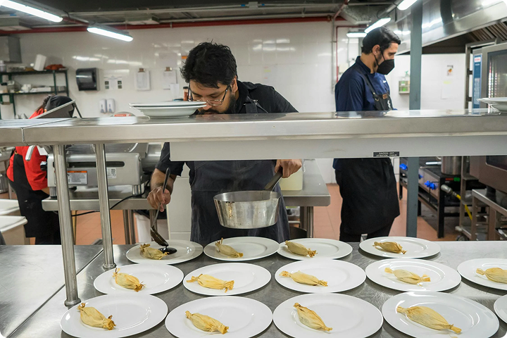

6 AM: A Quiet Yet Busy Start
While the city is still asleep, our kitchen is already coming to life. Chef Dion, our head chef, begins his day with an inspection of the ingredients — ensuring everything is fresh and ready to be prepared. The prep team starts chopping, weighing, and meticulously crafting the bases for sauces and broths.
"We believe that a disciplined morning yields honest flavors," says Chef Dion as he prepares the chicken stock that has been a staple of this restaurant since day one.

10 AM – Briefing, Taste Tests, and Experiments
Once all the ingredients are ready, the team gathers to taste and evaluate the menu for the day. There’s also a session for experimentation — our young chef, Alya, tries to blend traditional spices with modern plating techniques.
"Chef Dion always encourages us to boldly play with flavors — but to respect the ingredients," says Alya while stirring the coconut-salt sauce that will top the latest fusion dish.

12 PM – Time for Service to Begin
As lunchtime arrives, the kitchen transforms into a battlefield. The sounds of stoves, grills, and incoming orders echo in harmony. But everything operates like a symphony. Each chef knows their position. Coordination is swift, accurate, and panic-free.
Amid the hustle, plating remains an art. Every detail — from the placement of basil leaves to the lines of sauce on the plate — is arranged with love.

Serving More Than Just Food
At the restaurant, each chef brings their passion, experience, and love for cooking into the kitchen. They are flavor artists working without the spotlight, yet making a significant impact on each guest's experience.
Now, as you enjoy our dishes, you know — there are stories, dedication, and an incredible team behind every serving.